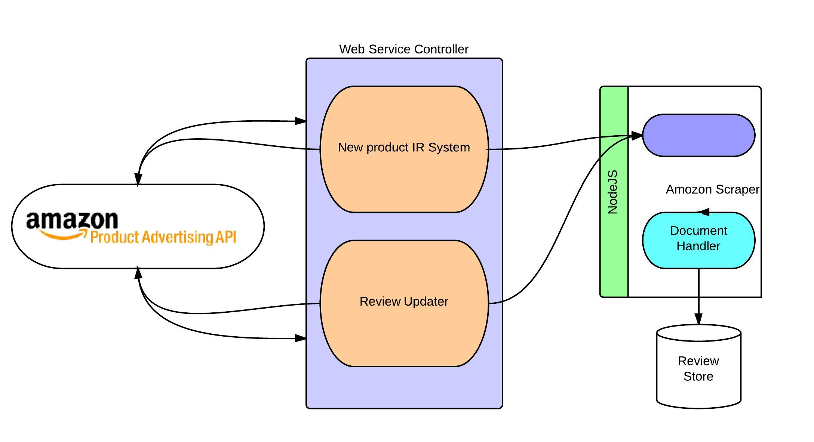

The main feeds for the SigmaCR are customer reviews which are taken from different online e-commerce sites and the metadata of those reviews. As the first approach we have come up with an information retrieval system which collects the information (reviews and matadata) from well-known e-commerce site Amazon.com
Basically there are two approaches possible. 1. Use Product Advertising API (web service) which is facilitated by the Amazon.com 2. Traditional technique of information retrieval, Screen Scraping One important constrain we have to deal with when calling amazon web services, which they provide as Amazon Product Advertising API is that the responses from the webservices only contain URLs to the iframes. These Iframes contain the information which we requested for. As an example if we sent a request to their service indicating the requirement for the reviews for a particular product, the response only includes an Iframe link to the customer reviews iframe. This shows that at some point we have to use screen scraping techniques to get the reviews. Therefore we came up with a hybrid approach for the information retrieval system.
The first part of the information retrieval system is implemented using JAVA. In order to get the free facilities given by the amazon AWS first the user have to sign up with amazon AWS using the link www.amazon.com and by following the on screen instructions. After signing up with their account you can request your credentials which are needed for accessing their services.
Considering the scenario in the project SigmaCR we had to come up with an efficient way to scrape content of the pages. There are number of network accesses and many file input output operations. Therefore it is necessary to have a non-blocking asynchronous architecture to deal with the efficiency and optimize the operations. NodeJS seems to be an interesting options for the requirements of the system SigmaCR.
Basically Information Retrieval system comprises of two main components. The web services handler which is implemented using java and the screen scraping scripts which are implemented using NodeJS.
Following diagram shows the architecture of the module.
Suppose the customer needs to analyze a new product which is not there in the system. For this kind of an approach the solution would be to get the search key and find out the relevant products in the e-commerce site and scrape reviews. The system SigmaCR basically do a search lookup using their product advertising API. From the responses we get, we order the products according to the number of reviews they include. Then the user is given the task to identify the relevant product.
The main reason for this kind of approach is the ambiguity of the user search queries. Suppose you want to find or evaluate Samsung Galaxy S4 smart phone. The user will never type the whole phrase for the search query. Instead he/she will serach for “galaxy s4” , “Samsung galaxy s4” or even “s4”. Therefore the response results will include the pouches, cases and even stands for the phone Samsung galaxy s4. It is very difficult to intuitively guess what users are looking for. Therefore the best option is to let the user to decide what the exact product they want. When they specify one or two exact products, finding similar products can be taken cared by the information retrieval system.
Once we identify the relevant products, the system will use those links to the products in order to retrieve reviews from the e-commerce site. Since this is the initial stage of getting reviews for the particular product the system will collect all reviews which are there in the product page with relevant metadata and other important information. Data which are retrieved include the following
These reviews are stored in a hierarchical manner, so that it makes easier to access the reviews with metadata. The screen scraper which is implemented using NodeJS consists of a web spider which is complicated and page dependent. What spider does is, once the scraping is called by the Java program it goes to the product page and retrieve the page. It looks in the page and find out the number of pages which
Reviews are needed to be updated. The content of the pages changes with the time. Therefore in order to provide a timely aggregation, definitely we have to have an updated review set. The above system can be reused with few modifications to update the review repository
When the system review repository needs to be updated simply the system will call the updating component which makes sure the reviews are up to date. What basically the updating components take care of is, when an update request come to a particular product, it simple reads the metadata of the relevant product directory and scrape the reviews which are posted after the last update. (the proposed approaches includes the process of getting relevant version of reviews directly from the web service)